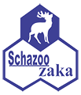
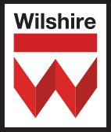
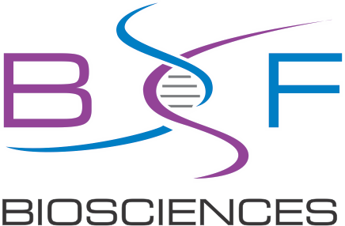
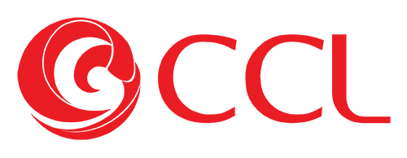
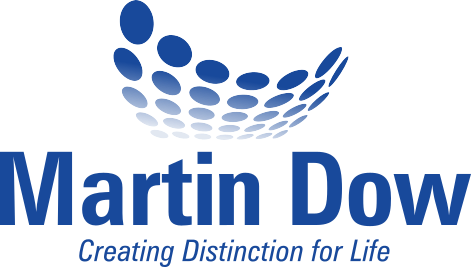

Quality Management Systems
Designing, implementing, reviewing, and continuously improving QMS processes to support compliant and efficient pharmaceutical operations.
Pharmaceutical Quality Expert, ISO 9001 Lead Auditor, QMS Expert
7+ Years of Industry Experience
Serving the pharmaceutical industry across diverse domains, with expertise in Quality Management Systems (QMS), regulatory compliance, and pharmaceutical manufacturing.
Building Quality-Centric Professionals
Trained and mentored pharmaceutical professionals across QMS, compliance, GMP, and quality-related practices, helping organizations strengthen their quality culture and capabilities.
Local & International Audit Experience
Handled and supported various local and international regulatory and quality audits, helping organizations maintain compliance, address observations, and continuously improve their quality systems.
Supporting Organizations Toward Certification
Provided consultancy and implementation support to organizations in establishing effective quality systems and achieving industry-recognized certifications and compliance standards.

Schazoo Zaka
Wilshire Labs
BF Biosciences
CCL Pharmaceuticals
Martin DowAbout
7+ Years of Experience in Pharmaceutical Quality Assurance
I am a Doctor of Pharmacy (Pharm-D) and Pharmaceutical Quality Assurance professional with over 7 years of experience across pharmaceutical manufacturing, Quality Management Systems (QMS), GMP compliance, auditing, and quality operations.
My career has focused on strengthening quality systems, ensuring regulatory compliance, improving manufacturing processes, and helping pharmaceutical organizations achieve and maintain high standards of quality.
Designing, implementing, reviewing, and continuously improving QMS processes to support compliant and efficient pharmaceutical operations.
Supporting organizations in maintaining GMP compliance, identifying gaps, managing risks, and preparing for regulatory and quality inspections.
Experience with internal, external, CMO, and regulatory audits, including audit preparation, execution, CAPA follow-up, and inspection readiness.
Hands-on experience across pharmaceutical manufacturing operations, including batch documentation, process controls, qualification, validation, deviations, and quality oversight.
I have trained and supported pharmaceutical professionals in QMS, GMP, compliance, auditing, and quality practices, helping teams strengthen their knowledge and develop a stronger culture of quality.
I have handled and supported local and international audits, including GMP and CMO audits, audit readiness activities, observations, CAPA management, and compliance improvement.
I have contributed to organizational certification and regulatory-readiness initiatives, including PIC/S inspection preparedness, helping align QMS processes and documentation with regulatory expectations.
I have contributed to documentation harmonization, QMS digitization, risk management, complaint and deviation processes, and continuous improvement initiatives across pharmaceutical operations.
Expertise
Six competency areas that make up a compliant, inspection-ready quality function.
Running the QMS end to end so that every quality event is captured, investigated and closed with evidence.
Holding contract manufacturing partners to the same standard as an in-house site.
Audits that find real gaps — and CAPAs that actually close them.
Risk-based thinking applied where it changes the decision, not just the paperwork.
From equipment qualification on the floor to protocol and report review at the desk.
Documents that hold up under inspection, harmonised across sites.
Experience
Martin Dow Marker (Pvt.) Ltd.
CCL Pharmaceuticals — Quaid-e-Azam Industrial Estate, Kot Lakhpat, Lahore
BF Biosciences Limited — Sundar Raiwind Road, Lahore
Wilshire Laboratories (Pvt.) Ltd. — Kot Lakhpat, Lahore
Schazoo Zaka (Pvt.) Ltd. — Kalalwala, District Sheikhupura
Skills
Job-related strengths built across seven years of hands-on QA practice.
Projects
Initiatives where quality work produced a measurable, auditable outcome.
CCL Pharmaceuticals
Participated in readiness activities for the PIC/S audit at the CCL site, contributing to the site's successful achievement of PIC/S certification. Aligned Quality Management System processes with PIC/S requirements, collected and reviewed departmental data, and coordinated documentation prior to submission to inspectors.
Cross-functional corporate initiative
Worked as part of a cross-functional team to streamline SOPs and related quality documents across two manufacturing sites. The initiative improved consistency, compliance and operational efficiency by aligning procedures with corporate quality standards and regulatory requirements.
SOFCOM platform rollout
Actively involved in digitising core QMS processes — customer complaints, deviation handling and risk management — onto the SOFCOM platform, moving quality events from paper trails into a traceable, searchable electronic workflow.
CMACED — Chaudhry Muhammad Akram Centre for Entrepreneurship & Development
A student venture developed through CMACED, which built entrepreneurship capability and culminated in a project exhibition at the Expo Centre Lahore. Recognised with a Certificate of Appreciation at the Superior Entrepreneurial EXPO 2018.
Credentials
A pharmacy doctorate, backed by continuing professional development in audit and quality.
The Superior College, Lahore
Pharmaceutics · Pharmacology · Pharmacognosy
The Superior College, Sargodha
Biology · Chemistry
New Bright Star Model High School, Sargodha
SGS Pakistan
ISO 9001:2015 requirements, audit planning and preparation, first-, second- and third-party audits, audit reporting, identifying non-conformities, corrective action follow-up, risk-based thinking, the process approach and audit team management.
CCL Pharmaceuticals, with The Missing P · Learning Minds · KAF Human Excellence & Co. · Zest Experience
Delivering impactful presentations, executive presence, change agility, innovation thinking, problem solving, decision making and data analytics.
Contact
Get in touch if I can support your organisation — consultancy on auditing and quality systems, or training for your professionals.
Support with internal, CMO, vendor and regulatory audits — audit preparation, execution, gap analysis, observation and CAPA follow-up, and inspection readiness.
Practical training for pharmaceutical teams in QMS, GMP, compliance, auditing and quality practices, built to strengthen day-to-day capability and quality culture.
Help establishing and improving QMS processes and documentation, and preparing organisations for certification and regulatory expectations.